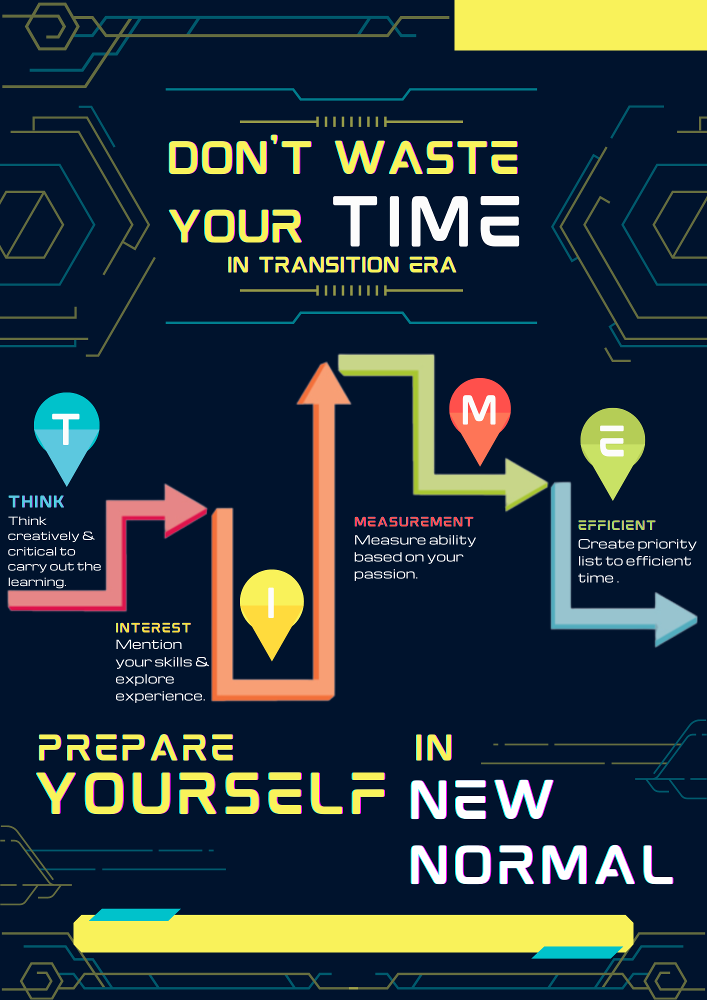

IT Development | Web Designer | Fullstack Developer
Portfolio
About
I am fresh graduate Informatics from Al Azhar Indonesia University with big passion to work in Computer Science field as a Data Scientist, Data Engineer, Machine Learning, Software Quality Assurance Tester, UI/UX Designer, Graphic Design, and Web Developer.
Offering an ability to handle and analyzing customer feedback for validity and appropriateness requirements software in accordance with my scientific competence.
Contact Me
On Social Media
Smart Three
SMART THREE merupakan aplikasi edukasi yang berkonsep seperti pembelajaran online. SMART THREE berasal dari kata "smart" yang berarti pintar dan "three" sebagai urutan kelompok yang menjalankan tugas.
UI aplikasi SMART THREE dibangun berbasis mobile. UI aplikasi ini dibuat untuk memenuhi salah satu tugas pada mata kuliah Interaksi Manusia dan Komputer.
Sazan Shop
Sazan Shop adalah sebuah website market place untuk masyarakat menjual dan membeli berbagai macam produk yang dibuat pada localhost. Sazan Shop ini dibuat secara kelompok untuk memenuhi salah satu tugas mata kuliah Basis Data Lanjut.
Berikut repository source code :
https://github.com/NazriTantowi/tubesBDL atau https://github.com/sayyiddrr/toko_online
Inspiring Audit V2
Inspiring Audit V2 merupakan pengembangan website lanjutan dari V1. Pada V2 ini terdapat penambahan modul Diklat Pegawai (Arsip) dan fitur.
Fitur yang ditambahkan anatara lain:
1. Add Data Diklat (Satu atau >1 diklat)
2. Filter Diklat Perorangan (Filter diklat berdasarkan nama pegawai dan tahun tertentu)
3. Export Data Diklat (Excel dan Pdf)
Inspiring Audit V3
Inspiring Audit V3 merupakan pengembangan website lanjutan dari V2. Pada V3 ini terdapat penambahan modul The Palugada (Arsip) dan fitur.
Fitur yang ditambahkan anatara lain:
1. Upload Materi Peningkatan Kompetensi Karyawan
2. Download dan View Materi Peningkatan Kompetensi
3. Setting Pop-Up untuk ditampilkan setiap memuat halaman portal
WinWin Apps
WinWin Apps merupakan aplikasi untuk bertukar kemampuan dengan konsep seperti "dating apps".
Tujuan WinWin apps yaitu sebagai wadah untuk orang yang ingin meningkatkan kemampuan tertentu secara gratis dengan memanfaatkan fitur "match" dimana sistem WinWin apps ini akan dapat bertukar kemampuan jika kedua user menginginkannya.
Pantau Stunting
Pantau Stunting merupakan hasil project Tugas Akhir saya. Pantau Stunting memiliki 3 fitur yaitu cek status gizi balita, tanya jawab seputar gizi balita secara umum, dan informasi gizi balita secara umum.
Pantau Stunting memanfaatkan model Machine Learning untuk memprediksi status gizi balita (fitur cek status gizi balita). Selain itu, fitur tanya jawab dikembangkan berdasarkan keyword yang berpeluang ditanyakan oleh user dan fitur informasi gizi balita dikembangkan dengan mengirimkan broadcast berupa gambar penjelasan.
Simple T-Shirt Design
Simple T-Shirt Design merupakan salah satu design kaos yang bertuliskan "All Is Good" dengan konsep after wash t-shirt.
Don't Waste Your Time In Transition Era

Topic : Going Easy To Adaptive in Transition Time
Poster Description :
The outbreak of COVID-19 (pandemic) has been impact on many fields. One of the effect : cultural factors becomes in certain social conditions in perceive time. The process negatively affected time management as it created psychological pressure and wasted time, this changed the perception of time by making the time to pass quickly, that people were motivation problems arising from the focus and lack of explanations about the lessons and family factors. Regarding the negative effects of the COVID-19 in time management, this poster aimed to provide solution "how prepare yourself to perceive time" in transition era.